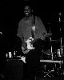

Этот застенчивый гигант произвел на свет больше блюзменов, чем кто-либо в Нью Орлеане, и, наверное, даже на всей Земле. 8 из его 11 детей-исполнители мирового класса, остальные периодически поигрывают на семейных джемах, а случается и на большой сцене как часть блюзового шоу. Семейство Нилов значит не меньше, чем те же, скажем, Марсалисы (Marsalises) или Невиллы (Nevilles). Это значительная луизианская музыкальная династия.
Рафул Нил (Raful Neal), дарованный мощным, захватывающим голосом и искусством исполнения на губной гармонике в стиле Литл Уолтера (Little Walter), может заставить хорошо одетых дам средних лет верещать на своих концертах. Много народу в Луизиане переболело Рафулом с тех пор, как он начал играть где-то в лет 15.
"Мы ходили во Дворец на Северном Бульваре слушать звезд, а белая молодежь была такой уж. . . Сидели и слушали блюз, не выходя из своих машин", вспоминает Биг Мэн Рафул. "Я больше всего любил слушать Литл Уолтера. Я видел его одной ночью. Тогда ди-джей (DJ) попросил меня и мою группу, присутвовавшую на концертеУолтера, сыграть номер-другой. Я тогда, помнится, весьма испугался и поэтому сказал, что у меня нет гармошек. А Уолтер тогда сказал: "Не проблема - у меня с собой семь". Да, мы тогда сыграли, задали им перцу: я, и Бадди с Филлипом (Buddy & Philip Guy). Мы думали тогда, что мы крутые такие. Но мало кто был действительно крут как Литл Уолтер. Я думаю, все-таки он запомнил нас, потому что он вернулся на сцену, весьма задетый за живое и достал свою хроматику - Бог ты мой, я никогда такой и не видел - и вымел нас со сцены. Мне тогда было около 19".
Вскоре Бадди Гай уехал в Чикаго. Он хотел забрать и Рафула с собой. Однако тот отказался ради свежеиспеченной семьи, хотя, как он отмечает, поехать в Чикаго был весьма не против. Зато ради какой семьи: Рафул и Ширли отпраздновали 40-ю годовщину свадьбы. "Мне кажется, что я остался последним из мужей 1957г. Часто вижу своих приятелей, одногодков по свадьбе, и почти всегда слышу, что они больше не со своими женами. Наша семья по-прежнему крепка, и мы по-настоящему счастливы.
Xоть Ширли и меньше всех в семье относится к музыкантам, она любит музыку и играет не последнюю роль в формировании семейной традиции. "Дети говорили мне - ты никогда не ругала нас за шум" - смеется Ширли. "Это было громко, но я всегда старалась обращать на это поменьше внимания. Да и отвлекаться особо времени не было - то кухня, то еще что-нибудь более важное, чем шум из комнат."
Рафул впервые записал сингл в 1957, но не записывался больше вплоть до 1968г. Его записи этого периода не пользовались особым успехом, и тем не менее он был в состоянии кормить свою семью с помощью музыки аж 14 лет. Рафул работал с такими гигантами из Луизианы как Слим Харпо (Slim Harpo), Лайтнин Слим (Lightnin' Slim), Лонсам Сандаун (Lonesome Sundown) и др. "Мы объездили с концертами весь юго-восток", вспоминает Рафул. "В то время у черных было трудновато с деньгами, и мы зачастую играли для черной аудитории за копейки, а иногда и совсем бесплатно. Потом ехали играть для белых, чтобы поправить финансовое положение. В основном мы играли в клубе "Карусель", что через реку (Миссисиппи). Там я понял впервые, что значит играть перед белыми".
В начале 70-х живая музыка потихоньку, но ощутимо для карманов, сошла на нет, и Нил-старший был вынужден оставить музыку и работать в Агенстве по Недвижимости Восточного Батон-ружа. Работа кормила семью и даже позволяла Рафулу периодически выступать. Тем временем подрастало новое поколение Нилов, вскормленное блюзом отца, и первым из родительского гнезда в 1976г. упорхнул Кенни Рэй, как зовет его отец. Кенни (Kenny Neal) рванул в Чикаго под патронаж старого папиного приятеля, мистера Б. Гая. "Kaкое-то время Кенни играл у Бадди на бас-гитаре. Но однажды они попали в Торонто, и Кенни решил остаться там. Причем ему настолько там хорошо, что он забрал туда Ноэля (Noel Neal), Ларри (Larry Neal) и Литл Рэя (Little Ray Neal)", констатирует эти факты гордый отец.
THE NEAL BROTHERS BLUES BAND гастролировали по Канаде около полутора лет перед тем как вернуться в Луизиану. До своего открытия в 1985г. Кенни успел обзавестись семьей и окончательно поселиться на севере, периодически появляясь в Луизиане на больших концертах. В 85-м он имел успех на Батон-ружском блюзовом фестивале, и после этого становится одним из ведущих артистов "Аллигатора". Мощи своих концертных выступлений он учился у отца, и всякий раз когда Рафул близко к месту выступления сына - он всегда желанный гость на концерте Кенни Нила. А постоянные зрители знают - если в зале есть отец семейства, значит услышат они коронную вещь Дома Нилов "Down Home Blues" (авторство принадлежит, однако, Зи Зи Хиллу (Z.Z.Hill). Кроме этого в семейном бэнде под упр. Кенни Нила участвуют также Дарнелл (Darnell Neal) бас-гитара; Фредрик (Fredrick Neal) - клавишные и Кэннард, но Джонсон (Kennard Johnson) - барабаны.
Рафул по-прежнему плотно занят в музыкальном плане: недавно он участвовал в серии концертов молодого луизианского гитариста Тэба Бенуа (Tab Benoit) в акустическом варианте "гармоника + гитара", а также с полным бэндом Бенуа. Нил, Бенуа и пианист Генри Грей (Неnry Gray), давний соратник Хаулин Вулфа (Howlin'Wolf) и Джона Ли Хукера (John Lee Hooker), вместе записали в прошлом году концертный альбом, с концерта перед заполненным HOUSE OF THE BLUES, Нью Орлеан.
Кенни Нил
Один из самых популярных блюзовых артистов в
мире. 5 альбомов на "Аллигаторе" (www.alligator.com). В 1991 г. взял Theater
World Award за роль в бродвейской постановке
Лэнгстона Хьюза и Зоры Нил Херстон "Кость
мула". Гитарист, певец, свою первую губную
гармонику получил из рук Слима Харпо.
Фредрик Нил
С подросткового возраста играет с Кенни как
клавишник. Неплохой певец, манера в папу.
Фредрик - гордый владелец Кадиллака из ф-ма
"Crossroads", который Фредрик перекупил у Литл
Милтона (Little Milton).
Ларри Нил
Когда Кенни выступает где-нибудь в Южной
Луизиане, Ларри присоединяется к нему как
барабанщик. Также работает с папой как
барабанщиком, так и гармошечником. Некоторые
считают присутствие Ларри на сцене
эквивалентным папиному или кенниному.
Рафул "Литл Рэй" Нил, мл.
Глубоко уважаемый блюзовый и джазовый гитарист.
Сейчас работает с собственным бэндом в Луизиане,
когда не занят на гастролях папы или Бобби
"Блю" Блэнда (Bobby 'Blue' Bland). В прошлом работал с
Литл Милтоном и Бобби Рашем (Bobby Rush). Отец
Джошуа и Треллис.
Ноэл Нил
Переехал в Чикаго и остался там у Джеймса Коттона
(James Cotton) играть на басу. Также работал c Б.Гаем,
Дж.Уэллсом, Дж.Уинтером, Коко Тэйлор, Лаки
Питерсоном, Л.Бруксом, и т. д. Его можно слышать на
многих студийных и живых записях (в последнее
время Ларри МакРэй (Larry McCray) и Шерман Робертсон
(Sherman Robertson) используют талант Ноэла.
Максим ПАВЛЮК

Фотографии концерта в декабре 1997г.